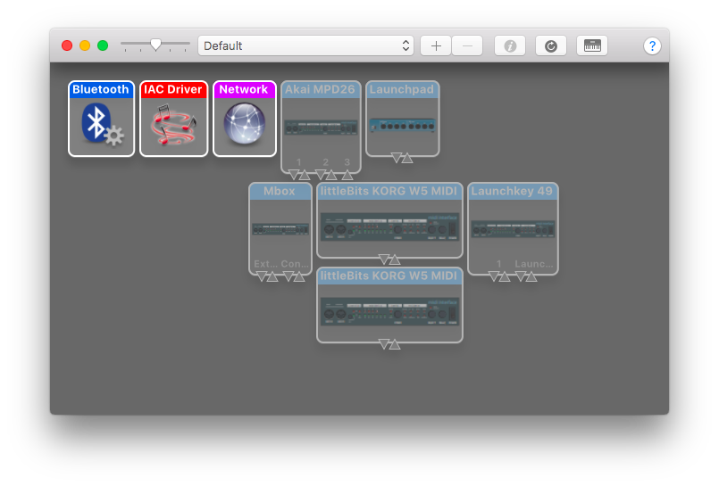
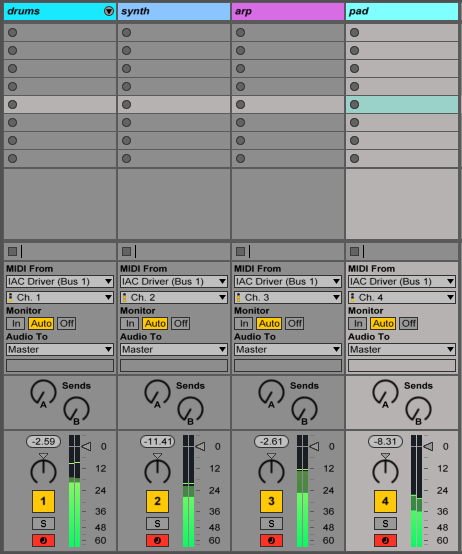
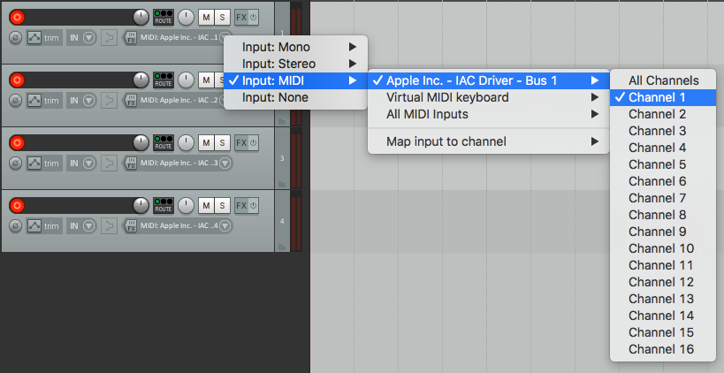

tbd 2: setup
Connecting to your DAW
To connect tbd 2 to your DAW on a Mac, open Audio MIDI Setup.
You can do this by hitting command + space and typing Audio MIDI Setup. Open the MIDI Studio
from the Window dropdown or by hitting command + 2, then click on the red IAC Driver icon.

In the MIDI Studio, check the name of your IAC driver and
click the "Device is online" box, then hit Apply.

Now, just choose the IAC driver from the MIDI studio from the dropdown in your session!
Ableton Live
To get set up with Ableton Live, use the MIDI From dropdown on each MIDI track
to select the IAC Bus your TBD session is sending to. Then, select the channel that each TBD Instrument is
sending to on the matching track. Make sure each track is record enabled by clicking the red button.To
record enable multiple tracks, hold command while you click the record button on other tracks.

FL Studio
To get set up with FL Studio, open Options > MIDI Settings. Choose your IAC driver and
make sure you click the Enabled button.

Managing your MIDI channels in FL Studio can be a little finicky! All tracks receiving MIDI
must be selected. A green recangle indicates that the track is selected, and holding shift allows selecting multiple
tracks. The MIDI channel that the track receives from is determined by the order of the tracks. In the snippet below,
the drums track receives from MIDI Channel 1, the bass track receives from MIDI Channel 2, and so on. Keep your tracks
in order, or your routing will change!

Reaper
To get set up with Reaper, click the Input dropdown on each track, then select Input: MIDI >
Your IAC Driver > MIDI Channel. Choose the appropriate MIDI channel for each track. Make sure all tracks are record
enabled by clicking the red record button on each track you want to receive MIDI. Unfortunately our Reaper template
isn't totally plug-and-play because Reaper doesn't come preloaded with instruments, but you can just add your
favorite synths and drums to each track to get groovin'!
